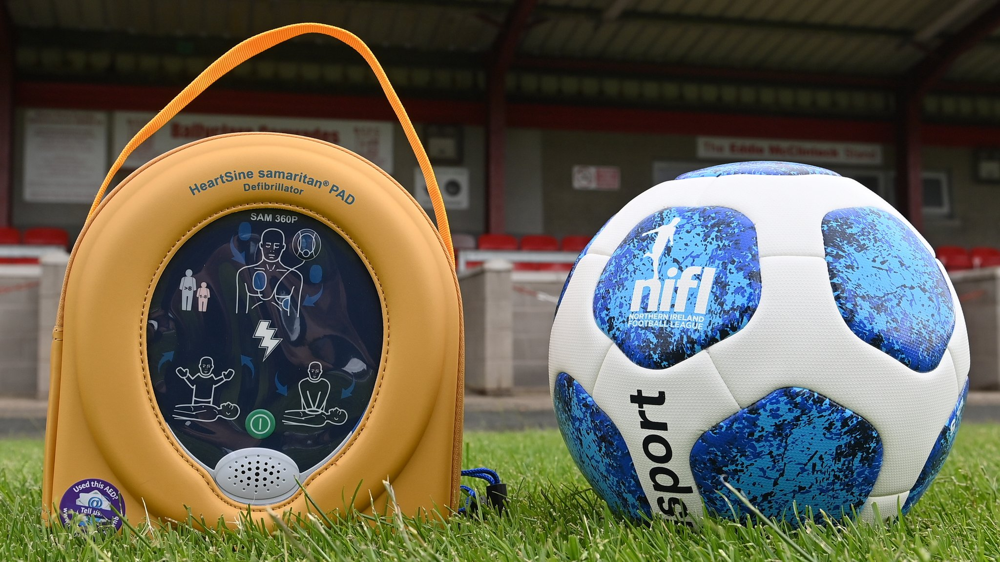
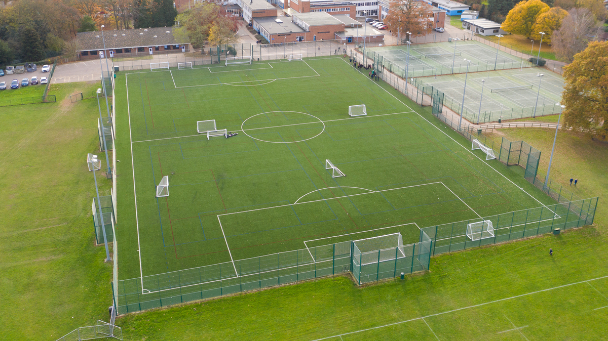
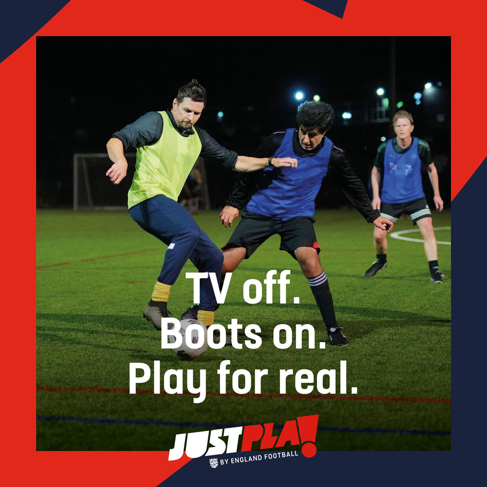

Brundall Bullfinches Raise Funds For Mobile Defibrillator (AED)
March 11th, 2025

We are raising funds to purchase a mobile defibrillator (AED) for a football club. Every second counts in a cardiac emergency. Whilst thankfully a rare occurrence, if someone suffers a sudden cardiac arrest, their chances of survival drop by 10% for every minute without a defibrillator (AED).
Read More
Brundall Bullfinches Move to Thorpe High 3G Pitch as New Home Ground
January 27th, 2025

We are excited to announce that we have a new 3G home pitch for the upcoming 2025-2026 season. After hearing the news that Norfolk Sunday League Premier Division side Vale Longo had folded, we saw an opportunity to move to a closer facility and are pleased to say that it will be our official home ground next season.
Read More
Brundall Bullfinches FC Partners with Just Play Initiative, Norfolk FA, and England Football to Promote Grassroots Football
January 7, 2025

We are excited to announce a new partnership with the Just Play initiative, Norfolk FA, and England Football to promote grassroots football in our community. This collaboration aims to provide accessible football sessions for all, regardless of age or ability.
Read More
Brundall Bullfinches Are Now Accredited
December 15, 2024
We are proud to announce that Brundall Bullfinches FC has achieved One-Star Accreditation through the FA's Club Accreditation Scheme. This milestone reflects our commitment to developing football at the grassroots level and providing a safe, inclusive environment for all players.
Read More